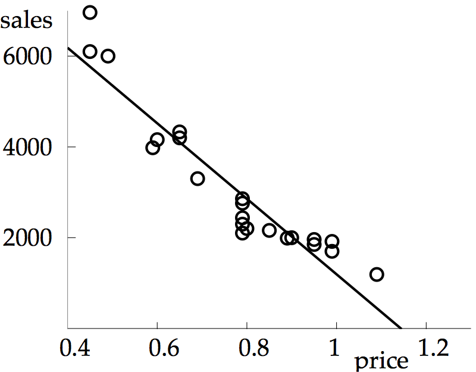

1 (b) The calculation is similar to (a). The normal equations are \[\left[\begin{array}{rrrr} 31& 8 & 20 & -7\\ 8& 23 & -6 & 7\\ 20 & -6 & 36 & -16\\ -7 & 7 & -16 & 10\\ \end{array}\right] \left[\begin{array}{c} x_0\\x_1\\x_2\\x_3\\ \end{array}\right]= \left[\begin{array}{r} 57\\31\\37\\-6\\ \end{array}\right] \] The least squares solution is \(\overline{x}=[1.2379, 0.6885, 1.2124, 1.7497]\) and the 2-norm error is \(||e||_2 = 0.8256\).
3 (b) Choosing a second-degree model \(y=a+b(t-1960)+c(t-1960)^2\) results in RMSE \( = 31 107 576\). The lower RMSE shows the parabola is a superior fit at the six data points. In addition, the parabola'a estimate of the 1990 population is \(5 290 011 346\), closer to the actual 1990 population than the linear approximation.

5 (b) The profit is given by \(F(P)=S(P-0.23) = (c_0+c_1P)(P-0.23)\), when the model is substituted for the sales. To find the maximum of the second-degree polynomial \(F(P)\), differentiate and set to zero: \(0 =F'(P) = c_1(P-0.23)+c_0+c_1P = 2c_1P+c_0-0.23c_1\) implies \(P=(0.23c_1-c_0)/(2c_1) = ((0.23)(-8314)-9510)/((2)(-8314))\approx 68.7\). The company's profit will be maximized for a selling price near \(69\) cents.
7 (b) Similar to (a), but the model is \(y=c_0+c_1t+c_2t^2\), leading to \[A= \left[\begin{array}{rrr} 1&-3.0&9.00\\1&-2.5&6.25\\1&-2.0&4.00\\1&-1.5&2.25\\1&-1.0&1.00\\1&-0.5&0.25\\1&0.0&0.00\\ 1&0.5&0.25\\1&1.0&1.00\\1&1.5&2.25\\1&2.0&4.00\\1&2.5&6.25\\1&3.0&9.00\\ \end{array}\right] \ \ \ \ \ \text{and} \ \ \ \ \ b=\left[\begin{array}{c} 0\\0\\0\\0\\0\\0\\1\\0\\0\\0\\0\\0\\0\\ \end{array}\right] \] The normal equations are \[ \left[\begin{array}{ccc} 13&0&45.5\\0&45.5&0\\45.5&0&284.375\\ \end{array}\right] \left[\begin{array}{c} c_0\\c_1\\c_2 \end{array}\right] = \left[\begin{array}{c} 1\\0\\0\\ \end{array}\right] \] which have solution \(c_0=0.1748, c_1 = 0, c_2 = -0.02797\), with RMSE \(\approx 0.2519\). The best parabola is \(y=0.1748-0.02797t^2\).
import numpy as np from scipy import linalg x = np.linspace(2., 4., 11) y = 1+x+x**2+x**3+x**4+x**5 A = np.array([x**0,x**1,x**2,x**3,x**4,x**5]).T c = linalg.solve(A.T@A,A.T@y)The best degree \(5\) polynomial is \(y = 1.00001185+0.99997909x+1.00001453x^2+0.99999503x^3 +1.00000084x^4+0.99999994x^5\). The coefficients have at least 4 correct places. The condition number of \(A^TA\) is approximately \(2.72\times 10^{13}\).
9 (b) Similar to (a), but with \(d=6\). The best degree \(6\) polynomial is \(y = 1.00387283+0.9917941x+1.00715503x^2+0.99671312x^3+1.00083925x^4+0.99988703x^5+1.00000627x^6\). The coefficients have two decimal place accuracy, and the condition number of \(A^TA\) is approximately \(2.55\times 10^{16}\).
9 (c) Similar to (a), but with \(d=8\). The best degree 8 polynomial is \( -2.10814682+ 8.36991145x -6.29594636x^2 +4.86242309x^3 -0.14742971x^4 +1.17431499x^5 + 0.99369095x^6 + 0.99841877x^7 + 1.00015504x^8. \) The coefficients have no decimal places of accuracy, due to the condition number \(\approx 1.41\times 10^{19}\).
11 (a) The best line is plotted below. The RMSE is approximately 2.60, and the prediction for 2030 is 99.57 M bbl/day.
11 (b) The best parabola is plotted below. The RMSE is approximately 2.23, and the prediction for 2030 is 118.21 M bbl/day.
11 (c) The best degree 3 curve is plotted below. The RMSE is approximately 2.20, and the prediction for 2030 is 120.46 M bbl/day. This curve has the smallest RMSE, and in that sense, best represents the given data.